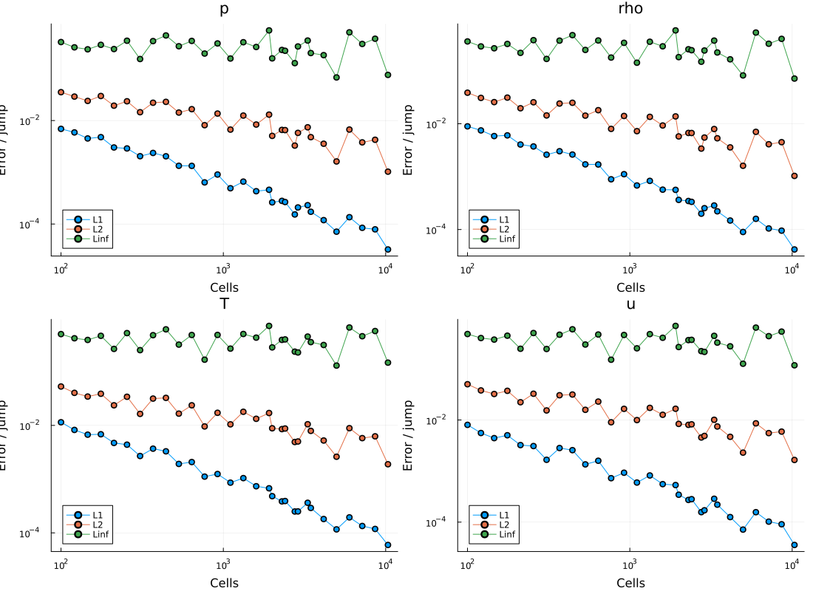
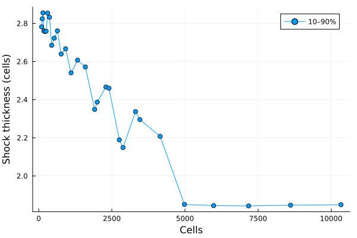
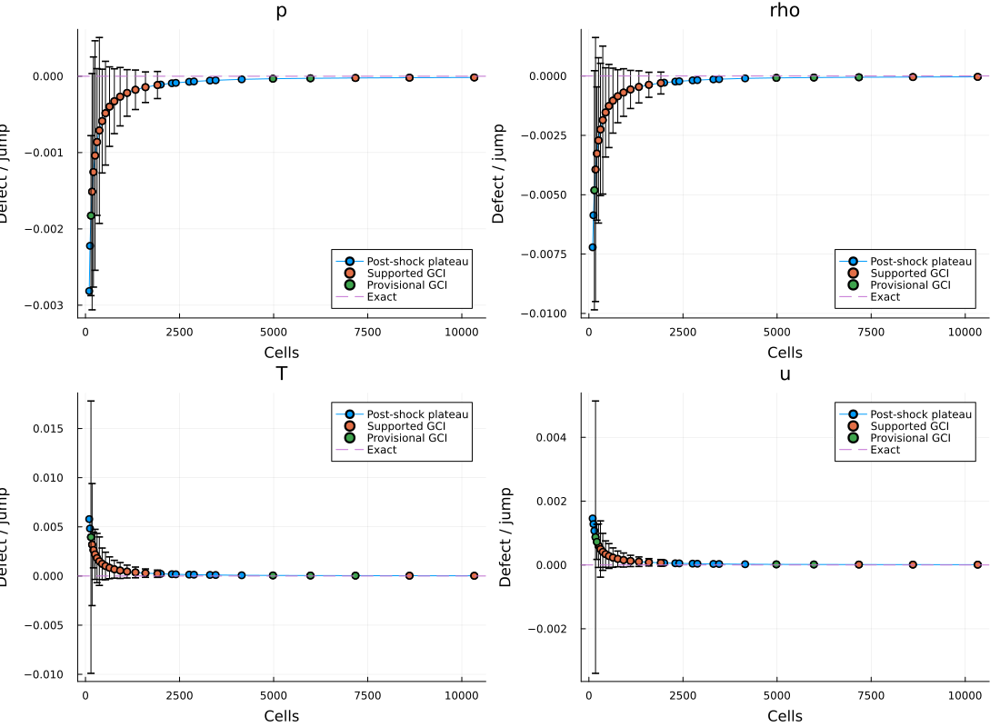
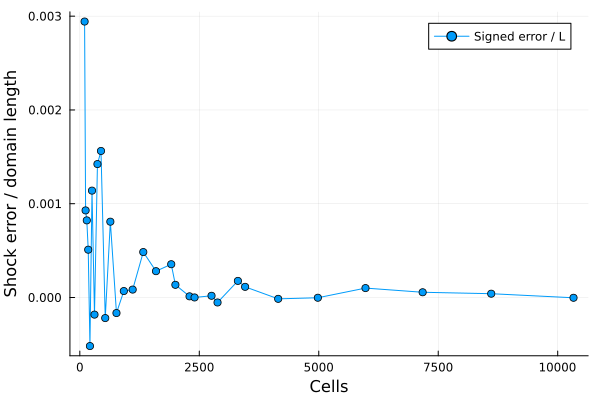
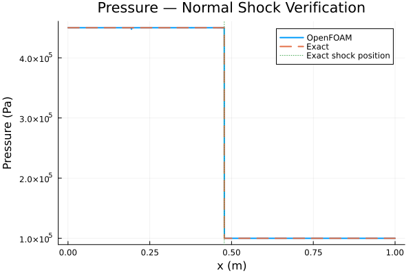
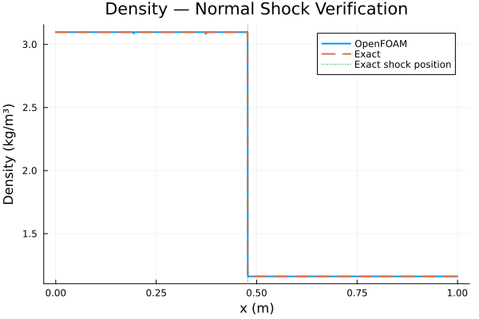
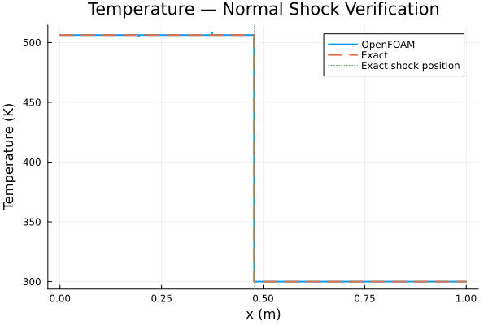
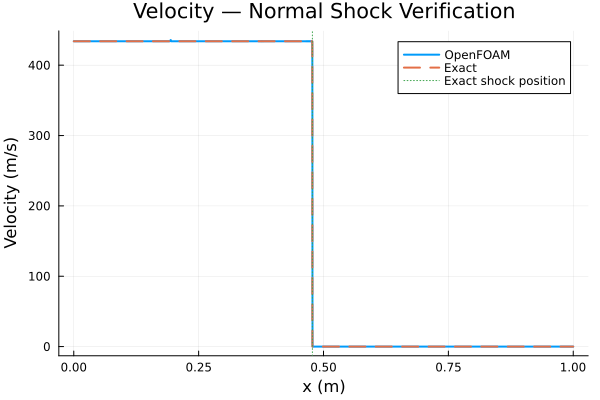

The objective of this verification case is to assess the accuracy of
OpenFOAM's rhoCentralFoam solver by comparing its numerical solution
against the exact Rankine–Hugoniot solution for a one-dimensional
normal shock.
The shock propagates through an initially stationary, calorically
perfect gas.
The quantities of interest are:
This is a verification problem, rather than an experimental validation
problem, because an analytical solution is available.
Consider a planar normal shock propagating in the positive
-direction.
Two uniform thermodynamic states exist:
The initial shock location is m.
| Parameter | Symbol | Value | Units |
|---|---|---|---|
| Upstream pressure | 100000 | Pa | |
| Upstream temperature | 300 | K | |
| Upstream velocity | 0 | m/s | |
| Shock Mach number | 2 | - | |
| Specific heat at constant pressure | 1004.5 | J/(kg K) | |
| Molecular weight | 28.970 | kg/kmol | |
| Initial shock position | 0.2 | m | |
| Domain length | 1.0 | m | |
| Final simulation time | 0.0004 | s |
The shock is treated as a mathematical discontinuity. Its physical
internal structure is not resolved.
The one-dimensional Euler equations can be written in conservative form:
where the conservative state vector is
and the inviscid flux vector is
The specific total energy is
For a calorically perfect gas,
and
The specific heats satisfy
and
Consequently,
and
These thermodynamic relations close the Euler equations.
The Rankine–Hugoniot conditions are conveniently derived in a
reference frame moving with the shock.
Let denote the shock propagation velocity.
The shock-relative velocity is
Because the shock travels faster than the gas in this problem,
is negative.
Define a positive relative flow speed:
Therefore,
and
Since the upstream gas is stationary,
so
The shock Mach number is
where is the upstream speed of sound.
Hence,
for this particular problem, where .
This equality does not generally hold for a shock propagating
through an upstream gas with nonzero laboratory-frame velocity.
Consider a conservation law
For a discontinuity moving at speed , integration across
the moving interface gives
where
denotes the jump between the two states.
Applying this relation to the Euler equations produces three
independent conservation conditions.
In the shock-fixed reference frame,
Define the mass flux
Therefore,
An increase in density must correspond to a decrease in the
velocity relative to the shock.
The momentum jump condition is
Using the constant mass flux,
Rearranging,
Substituting the mass-conservation relation gives
The energy jump condition in the shock-fixed frame is
For a calorically perfect gas,
Therefore,
Rearranging,
The decrease in shock-relative kinetic energy corresponds
to an increase in gas enthalpy.
Define the compression ratio
Mass conservation gives
Substitute this expression into momentum conservation:
Using the ideal-gas equation,
and
Therefore,
Divide by :
The upstream speed of sound is
Since
we obtain
Thus,
Now consider the energy equation:
Using
and
we obtain
Divide by :
Therefore,
Substitute Equation (2) into Equation (1):
Expand:
Multiply through by :
Factor :
The solution corresponds to no discontinuity.
For a nontrivial shock, the bracketed expression must vanish:
Collect terms:
Therefore,
This is the exact normal-shock density ratio for a
calorically perfect gas.
Start with the momentum jump condition:
Divide by :
Using
and
we obtain
From Equation (3),
Therefore,
Substitution gives
Thus,
An equivalent expression is
From the ideal-gas equation,
Taking the ratio between states,
Therefore,
Substituting Equations (3) and (4),
The shock is adiabatic but irreversible.
Consequently, entropy increases across a physical compressive shock,
even though no external heat is added.
The Rankine–Hugoniot relations determine velocities relative
to the moving shock.
To recover the laboratory-frame velocity, begin with
mass conservation:
Since the upstream gas is stationary,
Therefore,
Divide by :
Rearranging,
Using the compression ratio,
For a compressive shock, , so
The gas is accelerated in the laboratory frame, but its velocity
relative to the shock decreases.
This result follows directly from conservation of mass.
The specific gas constant is determined from the universal
gas constant and molecular weight:
Using
and
we obtain
The specific heat ratio must be calculated consistently:
The upstream speed of sound is
By definition, the shock Mach number is
Therefore,
For ,
For readability, the following values use
and .
Strict numerical verification should instead use the exact
thermodynamic constants specified in OpenFOAM.
From Equation (4),
Therefore,
Hence,
The upstream density is
Therefore,
Thus,
The density ratio is
Therefore,
Hence,
From Equation (5),
Therefore,
Hence,
From Equation (6),
Therefore,
Hence,
| Quantity | State 1 | State 2 | Units |
|---|---|---|---|
| Pressure | 100000 | 450000 | Pa |
| Temperature | 300 | 506.25 | K |
| Density | 1.1614 | 3.097 | kg/m³ |
| Laboratory velocity | 0 | 434.0 | m/s |
Because both states are uniform and satisfy the exact
Rankine–Hugoniot conditions, the shock travels at constant speed
before encountering any boundary-generated disturbances.
The shock trajectory satisfies
Integrating from the initial shock position gives
Therefore,
At
the shock position is approximately
Hence,
This is the analytical shock position used to verify
the OpenFOAM solution.
The analytical solution consists of two constant states
separated by a moving discontinuity.
Define the conservative state vectors:
and
The specific total energy in either state is
The shock trajectory is
The complete solution is
Equivalently, for any primitive field
,
The value exactly at the discontinuity is not uniquely
defined by the weak solution.
For numerical verification, comparisons are performed
using cell-centered values or appropriately integrated
cell averages.
Important: A conservative finite-volume solver evolves
cell averages, not point samples of the exact solution.
For strict error calculations, the analytical discontinuity
should be integrated over cells intersected by the shock,
rather than simply sampled at their centers.
Conservation alone is insufficient to distinguish a
physical compressive shock from a nonphysical expansion shock.
The physically admissible solution must satisfy the
entropy inequality.
For a calorically perfect gas, the specific entropy change is
An equivalent expression is
For the present shock,
and
Thus,
The result is positive:
This confirms that the compressive shock is
thermodynamically admissible.
Although the shock is adiabatic, entropy is generated
because the process is irreversible.
Once the OpenFOAM solution is available, it can be
compared with the analytical solution.
Let denote the numerically estimated shock position.
The absolute error is
A nondimensional form is
For a numerical field and exact field ,
define
The domain-normalized error is
The domain-normalized error is
The maximum error is
For uniform finite-volume cells, the corresponding
approximations are
and
Because the exact solution contains a discontinuity,
global error norms may converge more slowly than the
nominal smooth-region order of the numerical method.
A numerical shock is distributed across a finite
number of computational cells.
One reproducible measure is the distance between
the 90% and 10% pressure-jump levels:
and
The numerical shock thickness is
where and are interpolated
crossing locations.
Expressed in cell widths,
This metric characterizes numerical shock smearing,
not the physical molecular thickness of the shock.
The OpenFOAM solution should demonstrate:
Shock-position agreement alone is not sufficient to
establish correct numerical behavior.
The numerical solution must also reproduce the
conservative jump conditions and the physically
admissible entropy solution.
| cells | dx_m | time_s | refinement_ratio | shock_error_m | shock_error_cells | shock_thickness_m | shock_thickness_cells | solver_seconds |
|---|---|---|---|---|---|---|---|---|
| 100 | 0.01 | 0.0004 | NaN | 0.002942694554490255 | 0.2942694554490255 | 0.02782243943618029 | 2.782243943618029 | 0.41 |
| 121 | 0.008264462809917 | 0.0004 | 1.2100000000000521 | 0.0009288060383376706 | 0.11238553063886297 | 0.023342469663457266 | 2.8244388292784506 | 0.41 |
| 146 | 0.006849315068494827 | 0.0004 | 1.2066115702475868 | 0.0008225136197849703 | 0.12008698848857627 | 0.019559577103279935 | 2.8556982570781715 | 0.45 |
| 176 | 0.005681818181817657 | 0.0004 | 1.2054794520552008 | 0.0005099326294792927 | 0.08974814278836381 | 0.015686182513851787 | 2.7607681224381695 | 0.49 |
| 212 | 0.00471698113207564 | 0.0004 | 1.2045454545453005 | 0.0005176872317805281 | 0.10974969313746805 | 0.013004010912800346 | 2.756850313513575 | 0.53 |
| 255 | 0.003921568627449921 | 0.0004 | 1.2028301886796129 | 0.0011397485970605081 | 0.29063589225050807 | 0.010819552871643823 | 2.75898598226992 | 0.55 |
| 307 | 0.003257328990228366 | 0.0004 | 1.2039215686269953 | 0.00018255141348927362 | 0.05604328394120092 | 0.009297434107935432 | 2.854312271135868 | 0.58 |
| 369 | 0.0027100271002713856 | 0.0004 | 1.2019543973940974 | 0.0014229234433484894 | 0.5250587505955184 | 0.0076760262365784815 | 2.8324536812970593 | 0.65 |
| 443 | 0.00225733634311638 | 0.0004 | 1.200542005419556 | 0.0015627501558038714 | 0.6922983190207299 | 0.00606109378907993 | 2.685064548560915 | 0.67 |
| 532 | 0.0018796992481204143 | 0.0004 | 1.2009029345378417 | 0.00021925107426745694 | 0.11664157151028004 | 0.00511775303248263 | 2.722644613280595 | 0.73 |
| 639 | 0.0015649452269162068 | 0.0004 | 1.201127819549598 | 0.0008084991129791441 | 0.516630933193954 | 0.004321331329575406 | 2.761330719600186 | 0.79 |
| 767 | 0.0013037809647984335 | 0.0004 | 1.2003129890442523 | 0.00016572690887289854 | 0.12711253910546252 | 0.003441533314729739 | 2.639656052396658 | 0.86 |
| 921 | 0.0010857763300760434 | 0.0004 | 1.200782268579314 | 6.897973752029163e-5 | 0.0635303382561863 | 0.002895885939234455 | 2.667110950034837 | 0.98 |
| 1106 | 0.0009041591320072362 | 0.0004 | 1.2008686210641002 | 8.445457571093495e-5 | 0.09340676073629375 | 0.002297377392148525 | 2.5408993957162607 | 1.12 |
| 1328 | 0.000753012048192844 | 0.0004 | 1.2007233273054934 | 0.00048463205310605995 | 0.6435913665247853 | 0.001963229576398995 | 2.607168877457613 | 1.24 |
| 1594 | 0.0006273525721455913 | 0.0004 | 1.2003012048193062 | 0.0002808111974453298 | 0.4476130487278232 | 0.0016134781548823307 | 2.571884178882249 | 1.42 |
| 1913 | 0.0005227391531623531 | 0.0004 | 1.2001254705150184 | 0.00035499276803430124 | 0.6791011652499025 | 0.0012279417131094705 | 2.3490524971794002 | 1.68 |
| 2000 | 0.0005 | 0.0004 | 1.0454783063247062 | 0.00013534694827027627 | 0.27069389654055254 | 0.0011936999406736981 | 2.3873998813473962 | 1.8 |
| 2296 | 0.0004355400696863429 | 0.0004 | 1.14800000000018 | 1.2554826220534387e-5 | 0.02882588100235147 | 0.0010743156141322374 | 2.4666286500480035 | 1.84 |
| 2401 | 0.0004164931278633621 | 0.0004 | 1.04573170731698 | 5.920064825026827e-7 | 0.0014214075644890373 | 0.001024648953763918 | 2.4601821379873337 | 1.94 |
| 2756 | 0.00036284470246742903 | 0.0004 | 1.1478550603911568 | 1.8510653009340405e-5 | 0.0510153596937302 | 0.0007944489796347654 | 2.1895013878729 | 2.17 |
| 2882 | 0.0003469812630119729 | 0.0004 | 1.0457184325106015 | 5.288324368663e-5 | 0.15240950830479055 | 0.0007456440372989315 | 2.1489461154944336 | 2.18 |
| 3308 | 0.0003022974607011337 | 0.0004 | 1.1478140180443521 | 0.00017713511379285896 | 0.5859629564271581 | 0.0007066404390595471 | 2.3375665724105006 | 2.76 |
| 3459 | 0.00028910089621280886 | 0.0004 | 1.0456469165651108 | 0.00011377833027437223 | 0.3935592444190119 | 0.00066365510739963 | 2.295583016495077 | 2.92 |
| 4151 | 0.0002409058058299 | 0.0003999960196 | 1.2000578201794716 | 1.4180082409220862e-5 | 0.0588615220806808 | 0.0005318352429966589 | 2.207648093679319 | 3.74 |
| 4981 | 0.00020076289901616305 | 0.0003999743263 | 1.1999518188393221 | 2.497595901873595e-6 | 0.012440525187238495 | 0.000371561161162659 | 1.8507461437521149 | 5.3 |
| 5978 | 0.00016728002676470095 | 0.0004000208548 | 1.200160610319364 | 0.00010049192044259136 | 0.6007407004061822 | 0.00030857757008928566 | 1.8446767139948892 | 7.56 |
| 7174 | 0.00013939224979089704 | 0.0003999811923 | 1.2000669120100902 | 5.5954072769037744e-5 | 0.4014145180451188 | 0.0002569050271731821 | 1.8430366649406011 | 10.8 |
| 8609 | 0.00011615750958297032 | 0.000400020346 | 1.2000278784500829 | 4.0665395351802136e-5 | 0.3500883885837376 | 0.00021452382605990916 | 1.846835618550143 | 15.27 |
| 10331 | 9.67960507211655e-5 | 0.0003999831027 | 1.2000232315012336 | 2.8377667367074366e-6 | 0.029316968156913953 | 0.00017899812700861162 | 1.8492296501252996 | 21.68 |




The grid refinement study indicates that 7,174 cells, mm, as an accuracy-only candidate under the default tolerances.
Here are the results of the OpenFOAM case against the analytic solution:
NORMAL SHOCK VERIFICATION
======================================================================
Cells: 7174
Time: 3.999811923000e-04 s
Gamma: 1.4000048911
Exact shock speed: 694.381664 m/s
Exact shock location: 0.477739606 m
CFD shock location: 0.477795560 m
Absolute error: 5.595408236e-05 m
Shock error / dx: 0.401415 cells
FIELD ERRORS
----------------------------------------------------------------------
Field: p
L1: 4.43464773e+01
L2: 2.54271839e+03
Linf: 2.12130184e+05
State 1 bias: 0.00000000e+00
State 2 bias: -8.01624285e+00
Field: rho
L1: 2.84622211e-04
L2: 1.46463251e-02
Linf: 1.21887017e+00
State 1 bias: 2.22044605e-16
State 2 bias: -1.02391179e-04
Field: T
L1: 3.64387467e-02
L2: 1.90368684e+00
Linf: 1.56897038e+02
State 1 bias: 0.00000000e+00
State 2 bias: 7.75324279e-03
Field: u
L1: 6.27354811e-02
L2: 3.89953739e+00
Linf: 3.22360286e+02
State 1 bias: 3.94767879e-13
State 2 bias: 5.53158741e-03
10-90% shock thickness: 2.56905027e-04 m
Thickness in cells: 1.843
Saved: /home/jfowler/scratch/sim/normalShockVerification/verificationResults/verification_profiles.csv




Anderson, J. D., Modern Compressible Flow: With Historical
Perspective, 3rd ed., McGraw-Hill, 2003.
Toro, E. F., Riemann Solvers and Numerical Methods for Fluid
Dynamics: A Practical Introduction, 3rd ed., Springer, 2009.
LeVeque, R. J., Finite Volume Methods for Hyperbolic Problems,
Cambridge University Press, 2002.
Rankine, W. J. M., "On the Thermodynamic Theory of Waves of
Finite Longitudinal Disturbance," Philosophical Transactions
of the Royal Society of London, 1870.
Hugoniot, H., "Sur la propagation du mouvement dans les corps
et spécialement dans les gaz parfaits," Journal de l'École
Polytechnique, 1887–1889.